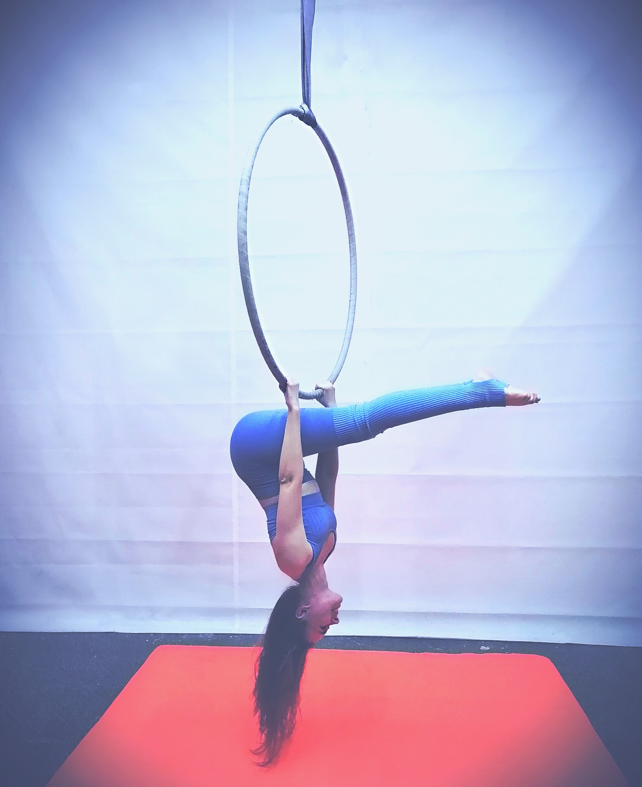

(Категория: подъемы)
Стоя на полу, лицом к кольцу.
Руки держат кольцо на ширине плеч за нижнюю дугу прямым хватом (ладонь сверху дуги). Оттолкнуться от пола ногами, зацепиться носком за нижнюю дугу кольца и пронести обе ноги между рук. Положить ноги на подколени и перехватами рук поднять корпус, занять положение сед на нижней дуге кольца, прямые ноги вместе, носки натянуты. Руки держаться за дуги кольца. Спина ровная. Подбородок не касается груди. (Высота кольца не оценивается)
✔ Выполнен подъем
✔ Выполнен сед с удержанием 3 секунды
(Категория: спуски)

Сед на кольце, руки держатся за боковые дуги кольца.
Опускаем руки по дугам до уровня плеч. Скользим бедрами назад и вниз, до уровня подколен. Затем руки скользят по дугам до колен. Перемещаем руки между колен прямым хватом и толкаемся под коленями так, чтобы таз оказался у нижней дуги кольца, голова внизу, ноги прямые, раскрыты в разножке, спина в прогибе, носки натянуты.
✔ Удержание в разножке 3 секунды
(Категория: подъемы)
Стоя на полу, лицом к боковой дуге кольца.
Руки держат Кольцо с двух сторон большим пальцем вверх в нижней центральной точке дуги. Выполняется небольшой прыжок (либо повиснуть на прямых руках). Цепляемся одним подколеном за нижнюю дугу кольца снаружи вовнутрь. Другая нога свободно висит. Начинаем перехват рук вверх по боковой дуге и давим ногой на Кольцо, выпрямляя её. "Заваливаем" корпус животом вниз вдоль дуги кольца (получается элемент "Полумесяц"). Колено и носок свободной ноги натянуты.
✔ Выполнен подъем с левой ноги
✔ Выполнен подъем с правой ноги
✔ Удержание в "полумесяце" 3 секунды
(Категория: висы)
Сид одной ногой на нижней дуге кольца, в области подъягодичной складки.
Две руки прямым хватом держат верхнюю дугу кольца по обе стороны от центрального крепления кольца. Выпрямляем руки в положении виса на руках, проворачиваем правую (левую) ногу влево (вправо) до внутренней поверхности бедра. Нога напряжена. Отпускаем левую (правую) руку, отводим в сторону. Свободная нога отведена от правой (левой), колени и носки натянуты.
✔ Выполнен подъем с левой ноги
✔ Выполнен подъем с правой ноги
✔ Удержание элемента 3 секунды
(Категория: шпагаты)
Выполняется из любого удобного положения (сидя/стоя на кольце или стоя на полу).
Две руки держатся за верхнюю дугу кольца прямым хватом по обе стороны от стропы. Правая (левая) стопа в области между пяткой и пальцами упирается в нижнюю дугу кольца и отталкивает Кольцо от себя. Руки выпрямлены. Свободная нога раскрывает шпагатную линию. Колени и носки натянуты.
✔ Выполнен подъем с левой ноги
✔ Выполнен подъем с правой ноги
✔ Удержание элемента 3 секунды
❊ Шпагат не оценивается
(Категория: висы)

Выполняется из любого удобного положения (сидя на кольце или стоя на полу).
Две руки держатся за верхнюю дугу кольца прямым хватом по обе стороны от стропы. Одна нога в области подъема лежит на нижней дуге кольца. Толкаем кольцо этой ногой и делаем шаг вперёд свободной ногой. Получается вис на руках, в спине прогиб (прогиб выполняется на выдохе). Свободная нога прямая, колено и носок свободной ноги натянуты.
✔ Выполнен подъем с левой ноги
✔ Выполнен подъем с правой ноги
✔ Удержание элемента 3 секунды
❊ Прогиб и выпрямленность опорной ноги не оценивается.
(Категория: сиды)
Сид на нижней дуге кольца, руки на боковых дугах прямым хватом большим пальцем вверх на уровне талии.
Оттягиваем корпус назад, руки выпрямляются в локтевых суставах, получается вис на руках. Делаем прогиб назад головой на выдохе. Лопатки соединены, плечи расправлены, ноги немного давят вниз. Колени согнуты и разведены в стороны, носки натянуты и соединены вместе. Ноги тянем к голове. Получается колечко.
✔ Удержание элемента 3 секунды
(Категория: висы)
Руки на ширине плеч на нижней дуге прямым хватом.
Заход в элемент любой (с кольца или с пола). Делаем вис на руках вниз головой. Одна нога с одной стороны кольца, другая с другой. Сначала к одной руке сделать складку. Спина прямая, в прогибе, колени и носки натянуты. Затем переводим ноги на другую руку и делаем прогиб (на выдохе) ноги к голове, "колечко". Носки натянуты.
✔ Выполнен элемент на левую сторону
✔ Выполнен элемент на правую сторону
✔ Удержание в складке 3 секунды
✔ Удержание в "колечке" 3 секунды
(Категория: балансы)
Сид полубоком.
Ставим одну ногу на боковую дугу кольца, пяткой во внутрь носок наружу, стопа упирается в Кольцо ямочкой (между носком и пяткой). Руки держатся за верх боковой дуги. Спиной отклоняемся назад и упираемся в противоположную боковую дугу от ноги. Затем ставим вторую ногу выше первой ноги также пяткой внутрь, носком наружу. Важно, чтобы кольцо на спине не лежало на позвоночнике и на копчике. Смещаем тело немного вправо или влево и располагаем Кольцо на мышцах спины. Голова находится сбоку от кольца. Таким образом, имеем дополнительный зацеп с кольцом в области шеи. Ногами давим в Кольцо, стопы натянуты. Отпустить обе руки.
✔ Выполнен элемент на левую сторону
✔ Выполнен элемент на правую сторону
✔ Удержание элемента 3 секунды
© ARRIBA, 2023